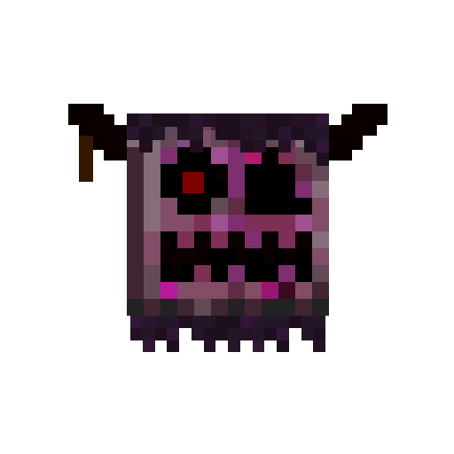
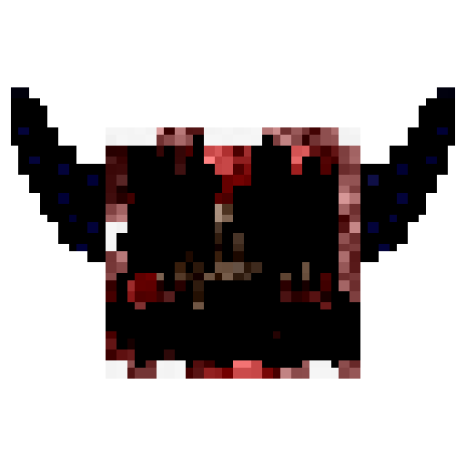

Hazed Plains

>> TEMPERATURE >WARM;
>> CLIMATE_DOWNFALL >VERY_OFTEN;
>> CIVILIZATION >MASSACRED;
>> DANGER_LEVEL >4/5;
DESCRIPTION
WARNING: HIGHLY TOXIC AND FLAMMABLE AREA!
It is recommended that you wear appropriate equipment before entering this area.

This biome is mostly composed of red colors and a really dense and toxic fog (this fog is even more dense than the fog from the “Ominous Valley”; also, it is only toxic to animals—we don’t have any reports of humans getting intoxicated due to the fog). All vegetation and species within this place are poisoned or even dead. Although the fog is not toxic to humans, it exposes them to many hallucinations if they aren’t wearing the appropriate equipment. Fun fact: the fog in this biome is capable of confusing most of the hostile beings and even making them lose sight of you.
ORIGIN

The “Hazed Plains” are the results of a large amount of stray spores from the valleys that, after oscillating between life and death over time, managed to develop them. Thanks to the records, the ruins, and our historians, we can learn more about the ancient civilization that lived in these zones. We have concluded that there were two types of people within the legacy or these areas: Those who arrived over time (from which we have found some campsites) and those who inhabited that area are the ones we're going to talk about.
This civilization gradually lost their sanity due to the confusion caused by the toxic fog. It was a generation completely doomed to extinction; they lost their coherence, contradicted and opposed each other, manipulated each other without scruples, became completely sadistic, and killed each other in the worst possible ways. They completely lost control, and all their decisions were dictated by a creature they idolized, an unreal creature visible to them due to the hallucinations caused by the high dose of spores inhaled from those plains. Anyone who opposed “Rottenmorphen” (or most likely what they interpreted as such, since that being didn’t have any conscience at all) was to be banished or annihilated; they were who nicknamed it, referring to it as a “rotten (corrupt) mass,” most likely associated with the number of people who were murdered in its name.
VEGETATION

The biome is completely devastated in terms of vegetation; if the plants from the “Ominous Valley” seemed like traps designed for prey, in this case each plant really feels like a murder trial. This biome has its own moss, which comes from the “Corrupted Moss” subjected to the high temperatures of this biome; even so, it still maintains the “Corrupted Short Grass” and the “Corruptles” from the “Ominous Valley.”
However, this biome has a rather peculiar flora, in that it does not grow naturally but rather infects it.

For example, a "Necroveil," which was used as a funeral plant, becomes a "Flaming Hope," as if somehow it persists or does not lose hope. Ironically, they seem to be their antithesis.
Another similar case occurs with the "Smiley Bud", which is quite rare, as we only know that this plant laughs and has no other particular function. Here it transforms into a "One-Motem", which is covered in thorns and can be lethal. One theory about this plant is that it is believed that it could grow someday, but that it may be a very slow process.
Then we have the “Kabloom,” which are aromatic flowers that spread reddish mist around.

Then we have the vegetation capable of producing fruits; these are the “Fumackia Ignervosas,” which produces “Agitated Fruits”; “Deathuras,” which produces “Toxinapples”; and "Cherossom,” which produces “Nulled Cherries.” They’re the only source of food in this hostile environment, although keep in mind that the “Agitated Fruit,” and especially the “Toxinapple” and “Nulled Cherries,” may seem harmless at first glance, but they can actually be lethal.

It is important to mention that “Corruptinies” can be found inside this habitat, where they are considered by the vegetation itself as an intruder or even a pest. Unlike in “Ominous Valley,” here they are prone to spreading their spores and expanding their territory as if it were a plant war.
RESEARCH ADVANCES

As we already know, this is an uninhabitable area for vegetation, humans, and especially animals; this is because the fog is toxic to them but not lethal, leaving them completely defenseless. Something curious is that when they die, they lose all their value; you can't get anything out of them except this green meat that our scientists have decided to nickname “Strangely Familiar Meat.”

We also have discovered that the hazed logs inside the “Hazed Plains” are capable of growing an eye that can open and close when it's nighttime; this is always searching for prey because it slowly opens whenever a human is nearby. Once it fully opens, it exposes its prey to anyone around, just like “Cursed Madness” does.
MUSIC
These tracks randomly play while being inside the biome: |
KNOWN THREATS
CURSED MADNESS

It is well known that the fog inside this environment is useful to protect yourself from hostile creatures due to how it confuses them, making them lose you; however, it only takes a screech to alert everyone that someone is hiding behind the fog. The “Cursed Madness” [EXPERIMENT_2120-C] (a nickname given by our researchers) are lost “Soulbounds” from the “Ominous Valley” who somehow managed to survive outside of it and adapt to this environment despite their deterioration. Their goal is not to hunt or devour you like other entities; they are simply there to alert everyone nearby about your position for a while.
Due to how weak they are, they prefer to help others do the dirty work while they wonder around after completing their suicidal mission. Due to their deterioration, they often have melted metal pieces to try to hold their bodies together, they move by bouncing due to their missing limbs, they lose one eye, their horns become charred, etc. But they all have something in common: they use a pale pumpkin as a defense system to confuse potential predators. Fun fact: if it is killed, it will explode due to the accumulation of spores it has consumed over time; there’s also the chance that its pumpkin will light up once it dies, leaving us with an “Ominous Pumpkin,” because its soul is now trapped in that pumpkin.
ROTTENMORPHEN

This being isn’t real; it's a hallucination caused by the spores from “Hazed Plains.” Simply inhaling them exposes you to a huge number of hallucinations, the most prominent of which is this one. Even if you haven’t interacted within those areas before, you’re still in danger, because, as we mentioned in “Global Impact,” the microscopic spores can be found everywhere. Rottenmorphen [EXPERIMENT-520] is the name given to it by the ancient civilization of the plains. Its goal is to feed on their victims' fear, so it plays on their fear to keep them at bay, because as long as they are tense, it has more opportunities to attack.
Its physical appearance is a kind of amalgam of several things: a ram, bloody tentacles for legs, exposed guts on its underside, dark blue horns, and a dense amount of noise as if it were rotting. It has an empty gaze, and its facial features look as if they have been torn apart by hand. Its face is split in half both horizontally and vertically, and between the cracks you can find various fangs twisted in various directions, which it uses to devour the fears of its prey. Despite this, it is not lethal; it is almost impossible for it to kill you. You could only suffer a heart attack, and that's it.